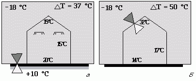
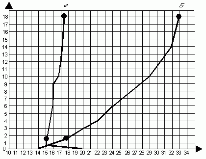
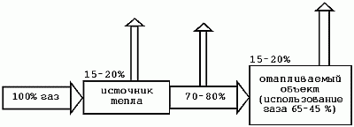

Электромагнитное излучение.

Излучение – это передача электромагнитной энергии в виде поперечных волн. Источником энергии являются возбужденные частицы, появляющиеся при возвращении возбужденной частицы на основной энергетический уровень. Данное возвращение сопровождается эмиссией фотонов излучения.
Процесс перехода на уровни может отличаться, и его проявления могут быть различными. Если процесс перехода инициируется столкновениями молекул, которые характеризуют температуру тела, то излучение обозначается как тепловое. Излучение в таком случае может иметь как корпускулярный, так и волновой характер. Квантовые корпускулярные свойства характерны для кратковолнового излучения, а волновые – для длинноволновых излучений. Электромагнитные излучения различных видов похожи друг на друга, но отличаются длиной волны и действием.
Тепловое излучение определяется как та часть спектра, которая характеризируется волновой длиной от 10–7 м до 10–4 м. В этой области находится и диапазон света с длиной волны 3,9.10–7 до 7,8.10–7 м. Большинство твердых и жидких веществ излучает на всех длинах волн от 0 и до бесконечности и имеет полный спектр излучения. Твердые вещества имеют непрерывный спектр излучения. Излучение зависит от вида вещества, из которого состоит тело, его температуры и поверхности.
Излучение тел с растущей температурой резко возрастает, при этом изменяется и спектр излучаемых волн. Вместе с ростом плотности потока излучения максимум спектральной плотности передвигается в область более коротких волн (приводимая зависимость известна как закон Вена). Таким образом повышается величина излучаемой энергии при коротких волнах. По этой причине при высоких температурах излучение доминирует над конвекцией и проводимостью.
При низких температурах наблюдается обратное явление. В самом излучении участвуют только тончайшие слои на поверхности тела. Тепло, распространяемое излучением, в отличие от тепла, распространяемого конвекцией и кондукцией, по своим параметрам и тепловому действию приближается к свойствам природного солнечного излучения.
Солнечные лучи, попадающие на поверхность Земли, имеют спектральный диапазон от 260.10–9 до 3000.10–9 м. Это значит, что спектр содержит видимое ультрафиолетовое и невидимое инфракрасное излучение. Излучение инфракрасных излучателей может находиться как в видимой (светлые инфракрасные излучатели), так и в невидимой (инфракрасной) части спектра (темные и супертемные излучатели).
Таким образом, становится ясно, что различный физический принцип передачи тепла требует различных способов расчета и проектирования отопительной системы. Так же и воздействие отопительной системы на тепловой комфорт человека будет отличаться от энергетических требований.
Сравним температурные условия, образованные центральной паро– и тепловоздушной отопительными системами и лучистой системой отопления (рис. 19).

Рис. 19. Пример температурных условий в помещении при использовании различных систем отопления: а – при лучистом отоплении; б – при конвективном отоплении
При конвективном отоплении тепловая энергия поступает в помещение с помощью конвективных устройств и тепловоздушных обменников. Источником тепла является энергия пара, поставляемая с помощью трубопроводов от центрального источника – котельной.
В этом случае тепловой комфорт обеспечивается обогретым воздухом, поступающим от обменников и конвективных устройств: дело в том, что первичной теплоносительной средой является горячий пар. Следовательно, согретый таким образом воздух бывает достаточно теплым. Однако чем теплее воздух, тем он легче и быстрее перемещается вверх. Это приводит к тому, что объем помещения согревается воздухом сверху вниз, причем под крышей температура наиболее высока. К тому же крыша с различными технологическими отверстиями и форточками считается помещением с плохими теплоизоляционными свойствами.
Распределение температур при лучистом и тепловоздушном отоплении в зависимости от высоты представлены на рис. 20.

Рис. 20. Распределение температур: а – при лучистом отоплении; б – при тепловоздушном отоплении
Вторым отрицательным результатом бывает так называемый каминный эффект, который увеличивает обмен воздуха в помещении. Мощность центрального отопления должна покрывать тепловые потери всей цепочки производства, дистрибьюции и обмена тепла (рис. 21).

Рис. 21. Производство и обмен тепла
Если потребление газа для производства тепловой энергии в котлах – 100%, потери в самом источнике тепла составляют 15% в виде воды и 20% в виде пара от всего количества энергии.
Лучистая отопительная система состоит из тепловых устройств – излучателей, которые помещаются над отопливаемой площадью. После включения и согрева на номинальную температуру излучатели начинают излучать электромагнитные волны, которые с небольшими потерями проходят через воздух, попадают на пол и преобразуются в тепло. Это значит, что воздух обогревается вторично, но уже от пола, который таким образом становится самым теплым местом в объекте. Излучатели с выгодой можно размещать только над местом, где находятся люди, чтобы обеспечивать им необходимые температурные условия, то есть образовывать температурные зоны без отделения их перегородками. Образование необходимых температурных режимов в этих зонах способствует снижению потребления газа от 70 до 30%.
Температурный градиент в зависимости от высоты при лучистом отоплении приближается к требованиям идеального отопления. В этом случае температура воздуха на уровне головы человека ниже, чем при тепловоздушном отоплении. Данная температура воздуха определяет преимущество использования лучистого отопления, так как для обогрева пространства требуется более низкая мощность; это видно из следующего уравнения тепловых потерь объекта:
Qo = E [kj . Sj . (ti – te)]
При тепловоздушном отоплении значительная площадь конструкции помещения противостоит температурной разнице внутренней и внешней температур:
/\t = (ti – te),
где /\t = 30° С – (–20° С) = 50° С.
При лучистом отоплении разница температур составляет:
/\t = 17° C – (–20° C) = 37° C.
Так как площадь конструкции и коэффициент прохождения тепла для обоих случаев одинаковы, соотношение тепловой мощности будет равняться соотношению /\t. В процентном отношении тепловая мощность лучистого отопления для покрытия тепловых потерь конструкции будет составлять только 74% от значения для тепловоздушной системы. Таким образом, комплексное сравнение гораздо сложнее, но оно соответствует среднему отношению тепловых мощностей, которые на практике составляют 80%.
Более низкая температура воздуха позволяет передавать биологическое тепло, которое образуется во время работы, и тем самым предотвращает перегрев организма.
Этот феномен лучистого отопления наступает в результате физической передачи тепла, где лучи-стый поток образует добавку тепла к температуре воздуха, ощущаемого человеком. Очень упрощенно это можно описать следующим уравнением:
tp = tv + ts (° С),
где tp – температура, ощущаемая человеком;
tv – температура воздуха;
ts = Is.0,072;
Is – интенсивность лучистого потока, а число 0,072 – эмперически полученная константа. Согласно этому равенству лучистый поток с интенсивностью 100 Wm-2 дополнительно повышает температуру на 7,2° С. Таким образом, для того чтобы получить температуру 18° С при лучистом потоке 100 Wm-2, после ввода значений в уравнение получается:
tp = tv + Is.0,072;
18оC = tv + 100 Wm – 2.0,072;
tv = 18°C–.7,2°C.
Данный расчет в таком виде является только показательным и предназначен для понимания физиче-ского принципа. Рассчитать с его помощью тепловую мощность невозможно, так как он не учитывает остальных условий, которые для этого расчета необходимы.
При отоплении излучателями в качестве прямо-обогревающих устройств не учитываются потери, связанные с дистрибьюцией тепла. Таким образом, использование газа представляется более целесообразным.
Общая энергетическая экономия топлива при лучи-стом отоплении может достигать 70% относительно сравнительной паро– и тепловоздушной отопительных систем.
Использование лучистых отопительных систем как прогрессивных и эффективных систем отопления предоставляет определенные выгоды с точки зрения образования рабочей среды.
1. Централизованное использование природного газа обеспечивает легкость его применения и более удобное регулирование температур в помещении.
2. Температура воздуха на уровне пола на 2–3° С выше, чем на высоте 1,5 м над полом.
3. Более равномерным способом распределяется температура по всей высоте отапливаемого объекта между газовым излучателем и полом.
4. При использовании лучистого отопления нет движения пыли.
5. Лучистое отопление является экологически без-опасным.
6. Не требует применения воды.
7. Лучистая система, по сравнению с тепловоздушной, работает практически бесшумно.
8. Лучистая отопительная система не может замерзнуть.
9. Обогрев помещения достигается за 10–25 минут.
10. Легкий монтаж и ремонт.
Недостаток лучистого отопления: лучистую отопительную систему нельзя использовать в помещениях, где существует опасность возникновения пожара.